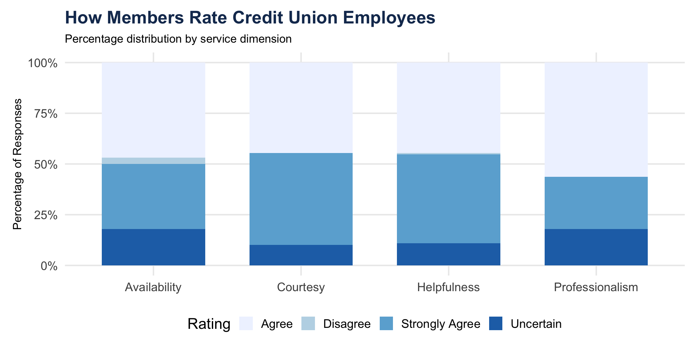
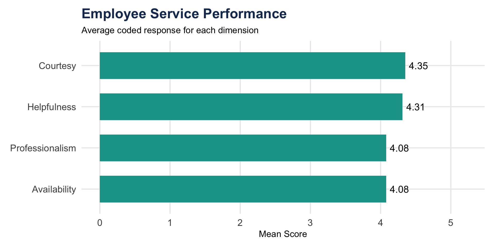
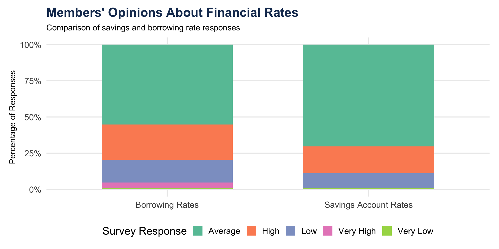
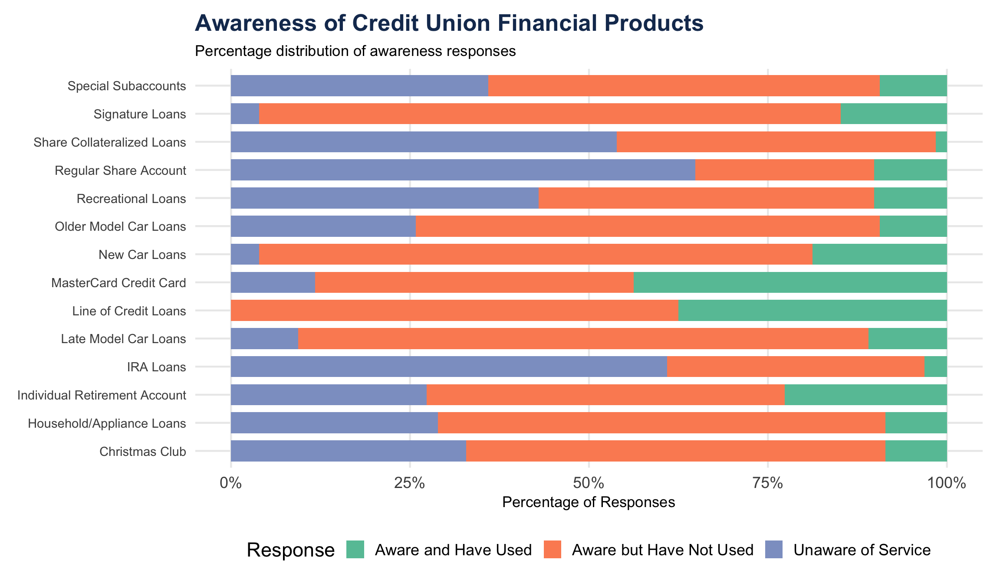
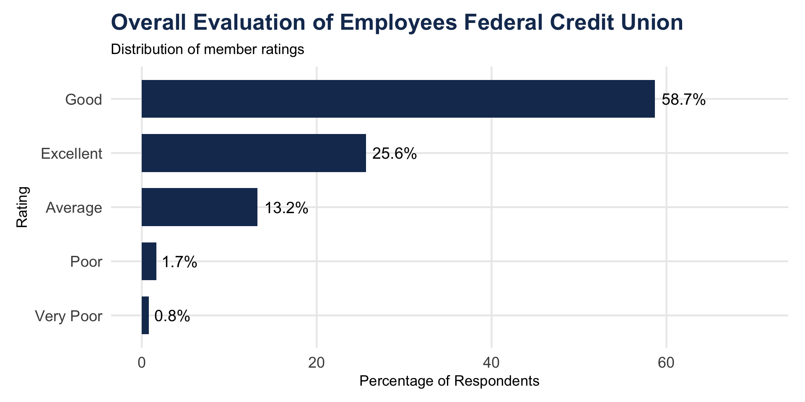
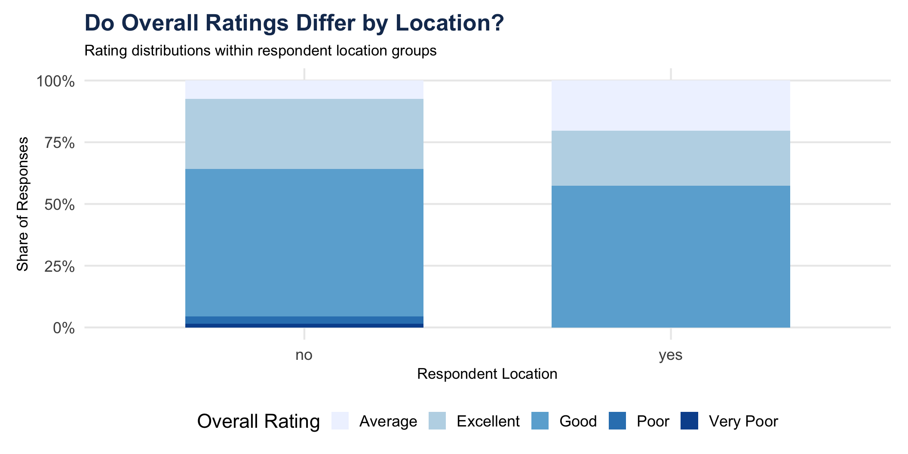

| Measure | Value |
|---|---|
| Survey respondents | 128 |
| Dataset variables | 53 |
| Data source | Case 31 SPSS |
Survey Data Analysis and Research Findings
Purpose
Analyze members’ perceptions of Employees Federal Credit Union using survey data.
Key areas explored
Data source: Case 31 cleaned SPSS dataset
The analysis follows three steps:
The primary objective is to communicate meaningful insights rather than simply report statistical calculations.
| Measure | Value |
|---|---|
| Survey respondents | 128 |
| Dataset variables | 53 |
| Data source | Case 31 SPSS |
Interpretation
This dataset contains survey responses about Employees Federal Credit Union’s services, products, and member experiences.
This exploratory analysis examines survey items measuring employees’ courtesy, helpfulness, professionalism, and availability.
Variables examined: Q3, Q4, Q5, and Q6.

Figure 1: Distribution of Employee Service Ratings

Figure 2: Average Employee Service Scores
Use the employee-service charts to answer the applicable research question.
Descriptive insights
Statistical analysis
Key insight
[Explain what the data suggest about employee service and the implications for the credit union.]
This exploratory analysis compares members’ opinions about:

Figure 3: Distribution of Financial Rate Perceptions
| Question | Response | Count | Percent |
|---|---|---|---|
| Q7: Savings Rates | Average | 83 | 70.3 |
| Q7: Savings Rates | High | 22 | 18.6 |
| Q7: Savings Rates | Low | 12 | 10.2 |
| Q7: Savings Rates | Very Low | 1 | 0.8 |
| Q8: Borrowing Rates | Average | 59 | 55.1 |
| Q8: Borrowing Rates | High | 26 | 24.3 |
| Q8: Borrowing Rates | Low | 17 | 15.9 |
| Q8: Borrowing Rates | Very High | 4 | 3.7 |
| Q8: Borrowing Rates | Very Low | 1 | 0.9 |
Descriptive insights
Statistical analysis
Key insight
[Explain what members’ perceptions suggest about the credit union’s financial offerings.]
The questionnaire contains multiple items measuring members’ awareness of credit union financial products.
Variables examined: Q13 through Q26.

Figure 4: Survey Responses on Financial Product Awareness
Using the product awareness chart, identify:
Statistical analysis
Key insight
[Identify the most important awareness gap and explain why it matters for Employees Federal Credit Union.]
This exploratory analysis uses:

Figure 5: Overall Credit Union Ratings

Figure 6: Credit Union Ratings by Respondent Location
Descriptive insights
Statistical analysis
Key insight
[Explain what the findings suggest about overall perceptions of credit union management and operations.]
| Area | Main Finding | Implication |
|---|---|---|
| R1 | [Insert result] | [Insert implication] |
| R2 | [Insert result] | [Insert implication] |
| R5 | [Insert result] | [Insert implication] |
| R6 | [Insert result] | [Insert implication] |
Based on the results, Employees Federal Credit Union should consider:
These recommendations should be revised to reflect the actual findings.
Final message
The most important outcome of this analysis is not the statistical calculation itself, but what the results reveal about members’ experiences and opportunities for improvement.
All visualizations are generated using R and ggplot2.